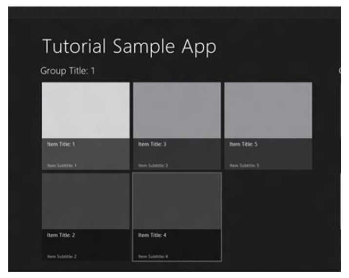

Обзор, цель и назначение урока
LESS - dynamic stilesheet language.
Понятие «отзывчивого» веб-дизайна.
Техники Responsive Web-design.
Media Queries.
CSS фреймворк Skeleton.
Адаптивный дизайн
Как сделать один сайт для всех устройств (Responsive Web Design)Основы применения адаптивного дизайна
Почему мы не создаем отдельный мобильный сайтLESS
Less CSSSkeleton
A dead simple, responsive boilerplate.
С помощью библиотеки LESS перепишите файл main.css в примере 001_CSS_Problem.
Cверстайте страницу по указанному макету. При открытии страницы в мобильном браузере
все блоки должны выстроится вертикально. Стили должны использовать LESS.

Используя Skeleton сверстайте страницу по указанному макету. При открытии страницы в мобильном браузере
все блоки должны выстроится вертикально.
-
- адаптация шаблона с различными
размерами экранов, начиная от широкоформатных настольных компьтеров до крошечных телефонов
- Изменение разрешения изображения в соответствии с разрешением экрана
- Обслужвание низкоскоростных изображений на мобильных устройствах
- Упрощение элементов страницы для использования на мобильных устройствах
- Скрытие несущественных элементов на небольших экранах
- Предоставление больших по размеру и удобных для нажатия пальцами ссылок и кнопок для мобильных пользователей
- Выявление и реагирование на мобильные функции, такие как геолокация и ориентация устройства
- Ключом к созданию адаптивных шаблонов является стандарт CSS media queries. С помощью media queries Вы можете создать множество наборов правил CSS, которые применяются только тогда, когда видимая область браузера находится в рамках определенной ширины или высоты, или в пределах диапазона заданной ширины / высоты.
- - применяется, если ширина окна больше или равна ширине шаблона.
- - применяется, если ширина окна меньше или равна ширине шаблона.
- - применяется, при ширине экрана устройства большей или равной ширине шаблона.
- - применяется, при ширине экрана устройства меньше или равной ширине шаблона.
- - это ширина окна браузера. На браузерах обычных компьтеров width, как правило, меньше ширины экрана. Тем не менеее, на мобильных браузерах width обычно больше ширины экрана, так как большинство мобильных браузеров используют «виртуальное окно», которое больше размеров экрана, что позволяет пользователю увеличивать и уменьшать масштаб изображения, а также перемещаться по области окна, перетаскивая изображения. Например, Mobile Safari использует виртуальное окно, ширина которого составляет 980рх, хотя ширинаэкрана устройства IOS, как правило, составляет от 320 до 768рх (в вертикальном режиме).
- - ширина экрана устройства.
- . Добавив этот тег для области head, можно управлять размером окна мобильного браузера.
- - этот показатель гарантрует, что страница, при самом первом ее просмотре польностью увеличена так, чтобы ширина окна совпадала с шириной экрана устройства при вертикальном режиме - например, 320 пикселей на Iphone и 768 пикселей на iPad.
- - этот показатель предотвращает увеличение масштаба страницы больше, чем при соотношении 1:1 в дальнейшем, даже при повороте в горизонтальный режим. Другими словами, этот показатель заставляет iPhone увеличивать шириу окна до 480рх в горизонтальном режиме. Если мы не включим максимальную величину масштаба, то ширина окна будет 320рх, как в верткальном режиме, так и в горизонтальном режиме. Иногда это может быть именно то, что вы хотите получить, но в случае нашего адаптивного шаблона такой вариант может стать причиной слишком сильного растягивания содержания в горизонтальном режиме.
-
- резиновая модульная сетка
- резиновые изображения
- использование media queries
- Резиновая модульная сетка. По существу, это означает, что сетка, которая традиционно измеряется в пикселях, должна рассматриваться с точки зрения процентов от общей ширины страницы. Реальная расчетная ширина каждого столбца адаптированного веб-сайта изменяется каждый раз, когда окно браузера изменяют в размере, и не может быть такой же на различных устройствах.
- - подстраивают свои размеры под блок родителя. Основная идея в неочевидном применении { max-width: 100% }. Изображение с img { max-width: 100% } никогда не вылезет из своего блока родителя
- Если блок-родитель меньше, чем размеры img, то изображение пропорционально уменьшиться. Этот принцип применим как для img, так и для embed, object, video.
- Mobile first - это техника, при которой сайт верстается сначала для устройств с меньшими возможностями, а затем с помощью media queries добавляются другие возможности.